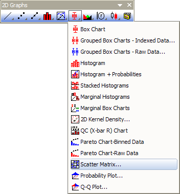

Matrix von Streudiagrammen
Scatter-Matrix
Eine Matrix von Streudiagrammen ist ein paarweise verbundenes Streudiagramm mehrerer Variablen, die in einem Matrixformat dargestellt werden. Sie kann verwendet werden, um zu bestimmen, ob die Variablen korrelieren und ob diese Korrelation positiv oder negativ ist.

Datenanforderungen
Mindestens zwei Arbeitsblattspalten (oder einen Bereich von mindestens zwei Spalten)
Diagramm erstellen
Zum Erstellen einer Matrix von Streudiagrammen:
- Markieren Sie mindestens zwei Arbeitsblattspalten (oder einen Bereich von mindestens zwei Spalten).
- Wählen Sie .
-
- oder
- Klicken Sie auf die Schaltfläche Matrix von Streudiagrammen in der Symbolleiste 2D-Grafiken.
Jede ausgewählte Spalte bzw. jeder ausgewählte Bereich wird in einem Streudiagramm gegen jede andere ausgewählte Spalte oder jeden anderen ausgewählten Bereich gezeichnet. Alle Layer werden als Matrix in einer Grafik dargestellt.
- 
Vorlage
BOXMATRIX.OTP (installiert im Origin-Programmordner)
Hinweise
- Beachten Sie, dass die Auswahl von N Datensätzen oder -bereichen zu N^2-N Grafiken und zu einer noch größere Anzahl von Datensätzen führt. Das Auswählen einer großen Zahl von Datensätzen oder -bereichen kann die Berechnungsdauer dramatisch erhöhen und kann deutlich kleinere Grafiken hervorrufen.
- Die Matrix von Streudiagrammen wird mit dem Dialog plot_matrix erstellt. Informationen zum Erstellen und benutzerdefinierten Anpassen der Matrix von Streudiagrammen finden Sie unter Matrizen von Streudiagrammen.
- Beim Erstellen oder Modifizieren der Matrix von Streudiagrammen haben Sie die Option, eine lineare Anpassung durchzuführen und die Statistikwerte korrigiertes R-Quadrat und/oder Pearsons r in einem neuen Arbeitsblatt mit dem Namen ScatterMatrixStatsN auszugeben. Außerdem werden die Statistiken als Textbeschriftungen in jeder Zeichnung in der Matrix von Streudiagrammen eingefügt. Weitere Informationen siehe Matrizen von Streudiagrammen.